3. Introduction au langage SQL
Dans cette section chapitre nous présentons les premières commandes SQL permettant de créer et d'exploiter une unique table. Nous en donnons en général une version simplifiée. Leur syntaxe complète est disponible dans les guides de référence de Firebird (cf paragraphe 2.2).
Une base de données est utilisée par des personnes ayant des compétences diverses :
- l'administrateur de la base est en général quelqu'un maîtrisant le langage SQL et les bases de données. C'est lui qui crée les tables car cette opération n'est en général faite qu'une fois. Il peut au cours du temps être amené à en modifier la structure. Une base de données est un ensemble de tables liées par des relations. C'est l'administrateur de la base qui définira ces relations. C'est également lui qui donnera des droits aux différents utilisateur de la base. Ainsi il indiquera que tel utilisateur a le droit de visualiser le contenu d'une table mais pas de la modifier.
- l'utilisateur de la base est quelqu'un qui fait vivre les données. Selon les droits accordés par l'administrateur de la base, il va ajouter, modifier, supprimer des données dans les différentes tables de la base. Il va aussi les exploiter pour en tirer des informations utiles à la bonne marche de l'entreprise, de l'administration, ...
Au paragraphe 2.6, nous avons présenté l'éditeur SQL de l'outil [IB-Expert]. C'est cet outil que nous allons utiliser. Rappelons quelques points :
- L'éditeur SQL s'obtient via l'option de menu [Tools/SQL Editor], soit via la touche [F12]

Nous obtenons alors une fenêtre [SQL Editor] dans laquelle nous pouvons taper un ordre SQL :
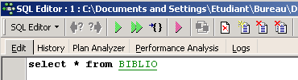
La copie d'écran ci-dessus sera souvent représentée par le texte ci-dessous :
3.1. Les types de données de Firebird
Lors de la création d'une table, il nous faut indiquer le type des données que peut contenir une colonne de table. Nous présentons ici, les types Firebird les plus courants. Signalons que ces types de données peuvent varier d'un SGBD à l'autre.
nombre entier dans le domaine [-32768, 32767] : 4 | |
nombre entier dans le domaine [–2 147 483 648, 2 147 483 647] : -100 | |
nombre réel de n chiffres dont m après la virgule NUMERIC(5,2) : -100.23, +027.30 | |
nombre réel approché avec 7 chiffres significatifs : 10.4 | |
nombre réel approché avec 15 chiffres significatifs : -100.89 | |
chaîne de N caractères exactement. Si la chaîne stockée a moins de N caractères, elle est complétée avec des espaces. CHAR(10) : 'ANGERS ' (4 espaces de fin) | |
chaîne d'au plus N caractères VARCHAR(10) : 'ANGERS' | |
une date : '2006-01-09' (format YYYY-MM-DD) | |
une heure : '16:43:00' (format HH:MM:SS) | |
date et heure à la fois : '2006-01-09 16:43:00' (format YYYY-MM-DD HH:MM:SS) |
La fonction CAST() permet de passer d'un type à l'autre lorsque c'est nécessaire. Pour passer une valeur V déclarée comme étant de type T1 à un type T2, on écrit : CAST(V,T2). On peut opérer les changements de type suivants :
- nombre vers chaîne de caractères. Ce changement de type se fait implicitement et ne nécessite pas l'utilisation de la fonction CAST. Ainsi l'opération 1 + '3' ne nécessite pas de conversion du caractère '3'. Son résultat est le nombre 4.
- DATE, TIME, TIMESTAMP vers chaînes de caractères et vice-versa. Ainsi
- TIMESTAMP vers TIME ou DATE et vice-versa
Dans une table, une ligne peut avoir des colonnes sans valeur. On dit que la valeur de la colonne est la constante NULL. On peut tester la présence de cette valeur à l'aide des opérateurs
IS NULL / IS NOT NULL
3.2. Création d'une table
Pour découvrir comment créer une table, nous commençons par en créer une en mode [Design] avec IBExpert. Nous suivons pour cela la méthode décrite au paragraphe 2.3. Nous créons ainsi la table suivante :

Cette table servira à enregistrer les livres achetés par une bibliothèque. La signification des champs est la suivante :
Name | Type | Contrainte | Signification |
Cette table qui a été créée avec l'outil IBEXPERT comme assistant aurait pu être créée directement par des ordres SQL. Pour connaître ceux-ci, il suffit de consulter l'onglet [DDL] de la table :

Le code SQL qui a permis de créer la table [BIBLIO] est le suivant :
- ligne 1 : propriétaire Firebird - indique le niveau de dialecte SQL utilisé
- ligne 2 : propriétaire Firebird - indique la famille de caractères utilisée
- lignes 6 - 14 : standard SQL : crée la table BIBLIO en définissant le nom et la nature de chacune de ses colonnes.
- ligne 16 : standard SQL : crée une contrainte indiquant que la colonne TITRE n'admet pas de doublons
- ligne 17 : standard SQL : indique que la colonne [ID] est clé primaire de la table. Cela signifie que deux lignes de la table ne peuvent avoir le même ID. On est proche ici de la contrainte [UNIQUE NOT NULL] de la colonne [TITRE] et de fait la colonne TITRE aurait pu servir de clé primaire. La tendance actuelle est d'utiliser des clés primaires qui n'ont pas de signification et qui sont générées par le SGBD.
La syntaxe de la commande [CREATE TABLE] est la suivante :
CREATE TABLE table (nom_colonne1 type_colonne1 contrainte_colonne1, nom_colonne2 type_colonne2 contrainte_colonne2, ..., nom_colonnen type_colonnen contrainte_colonnen, autres contraintes) | |||||||||
crée la table table avec les colonnes indiquées
|
La table [BIBLIO] aurait pu également être construite avec l'ordre SQL suivant :
Montrons-le. Reprenons cet ordre dans un éditeur SQL (F12) pour créer une table que nous appellerons [BIBLIO2] :

Après exécution, il faut valider la transaction afin de voir le résultat dans la base :

Ceci fait, la table apparaît dans la base :
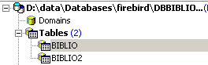
En double-cliquant sur son nom, on peut avoir accès à sa structure :

On retrouve bien la définition que nous avons faite de la table [BIBLIO2]
3.3. Suppression d'une table
L'ordre SQL pour supprimer une table est le suivant :
DROP TABLE table | |
Supprime [table] |
Pour supprimer la table [BIBLIO2] que nous venons de créer, nous exécutons maintenant la commande SQL suivante :

et nous la validons par [Commit]. La table [BIBLIO2] est supprimée :

3.4. Remplissage d'une table
Insérons une ligne dans la table [BIBLIO] que nous venons de créer :

Validons l'ajout de la ligne par [Commit] puis cliquons droit sur la ligne ajoutée :
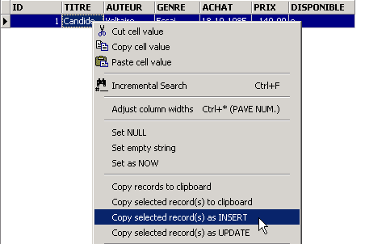
et demandons, comme il est montré ci-dessus, la copie de la ligne insérée dans le presse-papiers sous la forme d'un ordre SQL INSERT. Prenons ensuite n'importe quel éditeur de texte et collons (Coller / Paste) ce que nous venons de copier. Nous obtenons le code SQL suivant :
INSERT INTO BIBLIO (ID,TITRE,AUTEUR,GENRE,ACHAT,PRIX,DISPONIBLE) VALUES (1,'Candide','Voltaire','Essai','18-OCT-1985',140,'o');
La syntaxe d'un ordre SQL insert est la suivante :
insert into table [(colonne1, colonne2, ..)] values (valeur1, valeur2, ....) | |
ajoute une ligne (valeur1, valeur2, ..) à table. Ces valeurs sont affectées à colonne1, colonne2,... si elles sont présentes, sinon aux colonnes de la table dans l'ordre où elles ont été définies. |
Pour insérer de nouvelles lignes dans la table [BIBLIO], on tapera les ordres INSERT suivants dans l'éditeur SQL. On exécutera et on validera [Commit] ces ordres un par un. On utilisera le bouton [New Query] pour passer à l'ordre INSERT suivant.
Après avoir validé [Commit] les différents ordres SQL, nous obtenons la table suivante :
 |
3.5. Consultation d'une table
3.5.1. Introduction
Dans l'éditeur SQL, tapons la commande suivante :

et exécutons-la. Nous obtenons le résultat suivant :

La commande SELECT permet de consulter le contenu de tables de la base de données. Cette commande a une syntaxe très riche. Nous ne présentons ici celle permettant d'interroger une unique table. Nous aborderons ultérieurement l'interrogation simultanée de plusieurs tables. La syntaxe de l'ordre SQL [SELECT] est la suivante :
SELECT [ALL|DISTINCT] [*|expression1 alias1, expression2 alias2, ...] FROM table | |
affiche les valeurs de expressioni pour toutes les lignes de table. expressioni peut être une colonne ou une expression plus complexe. Le symbole * désigne l'ensemble des colonnes. Par défaut, toutes les lignes de table (ALL) sont affichées. Si DISTINCT est présent, les lignes identiques sélectionnées ne sont affichées qu'une fois. Les valeurs de expressioni sont affichées dans une colonne ayant pour titre expressioni ou aliasi si celui-ci a été utilisé. |
Exemples :
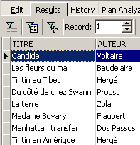
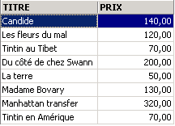
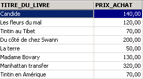
Ci-dessus, nous avons associé des alias (TITRE_DU_LIVRE, PRIX_ACHAT) aux colonnes demandées.
3.5.2. Affichage des lignes vérifiant une condition
SELECT .... WHERE condition | |
seules les lignes vérifiant la condition sont affichées |
Exemples


Un des livres a le genre 'roman' et non 'Roman'. Nous utilisons la fonction upper qui transforme une chaîne de caractères en majuscules pour avoir tous les romans.

Nous pouvons réunir des conditions par les opérateurs logiques
ET logique | |
OU logique | |
Négation logique |


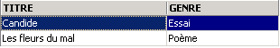

 |

3.5.3. Affichage des lignes selon un ordre déterminé
Aux syntaxes précédentes, il est possible d'ajouter une clause ORDER BY indiquant l'ordre d'affichage désiré :
SELECT .... ORDER BY expression1 [asc|desc], expression2 [asc|dec], ... | |
Les lignes résultat de la sélection sont affichées dans l'ordre de 1 : ordre croissant (asc / ascending qui est la valeur par défaut) ou décroissant (desc / descending) de expression1 2 : en cas d'égalité de expression1, l'affichage se fait selon les valeurs de expression2 etc .. |
Exemples :
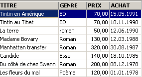

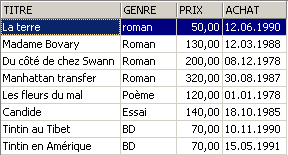


3.6. Suppression de lignes dans une table
DELETE FROM table [WHERE condition] | |
supprime les lignes de table vérifiant condition. Si cette dernière est absente, toutes les lignes sont détruites. |
Exemples :

Les deux commandes ci-dessous sont émises l'une après l'autre :
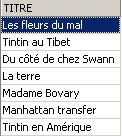
3.7. Modification du contenu d'une table
update table set colonne1 = expression1, colonne2 = expression2, ... [where condition] | |
Pour les lignes de table vérifiant condition (toutes les lignes s'il n'y a pas de condition), colonnei reçoit la valeur expressioni. |
Exemples :
On met tous les genres en majuscules :

On vérifie :

On affiche les prix :
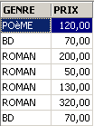
Le prix des romans augmente de 5% :
On vérifie :

3.8. Mise à jour définitive d'une table
Lorsqu'on apporte des modifications à une table, Firebird les génère en fait sur une copie de la table. Elles peuvent être alors rendues définitives ou bien être annulées par les commandes COMMIT et ROLLBACK.
COMMIT | |
rend définitives les mises à jour faites sur les tables depuis le dernier COMMIT. |
ROLLBACK | |
annule toutes modifications faites sur les tables depuis le dernier COMMIT. |
Un COMMIT est fait implicitement aux moments suivants : a) A la déconnexion de Firebird b) Après chaque commande affectant la structure des tables : CREATE, ALTER, DROP. |
Exemples
Dans l'éditeur SQL, on met la base dans un état connu en validant toutes les opérations faites depuis le dernier COMMIT ou ROLLBACK :
On demande la liste des titres :

Suppression d'un titre :
Vérification :

Le titre a bien été supprimé. Maintenant nous invalidons toutes les modifications faites depuis le dernier COMMIT / ROLLBACK :
Vérification :

On retrouve le titre supprimé. Demandons maintenant la liste des prix :

Mettons tous les prix sont mis à zéro.
Vérifions les prix :

Supprimons les modifications faites sur la base :
et vérifions de nouveau les prix :

Nous avons retrouvé les prix primitifs.
3.9. Ajout de lignes dans une table en provenance d'une autre table
Il est possible d'ajouter des lignes d'une table à une autre table lorsque leurs structures sont compatibles. Pour le montrer, commençons par créer une table [BIBLIO2] ayant la même structure que [BIBLIO].
Dans l'explorateur de bases d'IBExpert, double-cliquons sur la table [BIBLIO] pour avoir accès à l'onglet [DDL] :

Dans cet onglet, on trouve la liste des ordres SQL qui permettent de générer la table [BIBLIO]. Copions la totalité de ce code dans le presse-papiers (CTRL-A, CTRL-C). Puis appelons un outil appelé [Script Executive] permettant d'exécuter une liste d'ordres SQL :

On obtient un éditeur de texte, dans lequel nous pouvons coller (CTRL-V) le texte mis précédemment dans le presse-papiers :

On appelle souvent script SQL une liste d'ordres SQL. [Script Executive] va nous permettre d'exécuter un tel script alors que l'éditeur SQL ne permettait l'exécution que d'un unique ordre à la fois. Le script SQL actuel permet de créer la table [BIBLIO]. Faisons en sorte qu'il crée une table appelée [BIBLIO2]. Il suffit pour cela de changer [BIBLIO] en [BIBLIO2] :
Exécutons ce script avec le bouton [Run Script] ci-dessous :
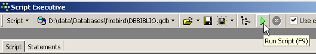
Le script est exécuté :

et on peut voir la nouvelle table dans l'explorateur de bases :

Si on double-clique sur [BIBLIO2] pour vérifier son contenu, on découvre qu'elle est vide, ce qui est normal :

Une variante de l'ordre SQL INSERT permet d'insérer dans une table, des lignes provenant d'une autre table :
INSERT INTO table1 [(colonne1, colonne2, ...)] SELECT colonnea, colonneb, ... FROM table2 WHERE condition | |
Les lignes de table2 vérifiant condition sont ajoutées à table1. Les colonnes colonnea, colonneb, .... de table2 sont affectées dans l'ordre à colonne1, colonne2, ... de table1 et doivent donc être de type compatible. |
Revenons dans l'éditeur SQL :

et émettons l'ordre SQL suivant :
qui insère dans [BIBLIO2] toutes les lignes de [BIBLIO] correspondant à un roman. Après exécution de l'ordre SQL, validons-le par un [Commit] :
Ceci fait, consultons les données de la table [BIBLIO2] :

3.10. Suppression d'une table
DROP TABLE table | |
supprime table |
Exemple : on supprime la table BIBLIO2
On valide le changement :
Dans l'explorateur de bases, on rafraîchit l'affichage des tables :

On découvre que la table [BIBLIO2] a été supprimée :

3.11. Modification de la structure d'une table
ALTER TABLE table [ ADD nom_colonne1 type_colonne1 contrainte_colonne1] [ALTER nom_colonne2 TYPE type_colonne2] [DROP nom_colonne3] [ADD contrainte] [DROP CONSTRAINT nom_contrainte] | |
permet d'ajouter (ADD) de modifier (ALTER) et de supprimer (DROP) des colonnes de table. La syntaxe nom_colonnei type_colonnei contrainte_colonnei est celle du CREATE TABLE. On peut également ajouter / supprimer des contraintes de table. |
Exemple : Exécutons successivement les deux commandes SQL suivantes dans l'éditeur SQL
Dans l'explorateur de bases, vérifions la structure de la table [BIBLIO] :

Les modifications ont été prises en compte. Voyons comment a évolué le contenu de la table :

La nouvelle colonne [NB_PAGES] a été créée mais n'a aucune valeur. Supprimons cette colonne :
Vérifions la nouvelle structure de la table [BIBLIO] :

La colonne [NB_PAGES] a bien disparu.
3.12. Les vues
Il est possible d'avoir une vue partielle d'une table ou de plusieurs tables. Une vue se comporte comme une table mais ne contient pas de données. Ses données sont extraites d'autres tables ou vues. Une vue comporte plusieurs avantages :
- Un utilisateur peut n'être intéressé que par certaines colonnes et certaines lignes d'une table donnée. La vue lui permet de ne voir que ces lignes et ces colonnes.
- Le propriétaire d'une table peut désirer n'en autoriser qu'un accès limité, à d'autres utilisateurs. La vue lui permet de le faire. Les utilisateurs qu'il aura autorisés n'auront accès qu'à la vue qu'il aura définie.
3.12.1. Création d'une vue
CREATE VIEW nom_vue AS SELECT colonne1, colonne2, ... FROM table WHERE condition [ WITH CHECK OPTION ] | |
crée la vue nom_vue. Celle-ci est une table ayant pour structure colonne1, colonne2, ... de table et pour lignes, les lignes de table vérifiant condition (toutes les lignes s'il n'y a pas de condition) | |
Cette clause optionnelle indique que les insertions et les mises à jour sur la vue, ne doivent pas créer de lignes que la vue ne pourrait sélectionner. |
Remarque La syntaxe de CREATE VIEW est en fait plus complexe que celle présentée ci-dessus et permet notamment de créer une vue à partir de plusieurs tables. Il suffit pour cela que la requête SELECT porte sur plusieurs tables (cf chapitre suivant).
Exemples
On crée à partir de la table biblio, une vue ne comportant que les romans (sélection de lignes) et que les colonnes titre, auteur, prix (sélection de colonnes) :
Dans l'explorateur de bases, rafraîchissons la vue (F5). On voit apparaître une vue :

On peut connaître l'ordre SQL associé à la vue. Pour cela, double-cliquons sur la vue [ROMANS] :

Une vue est comme une table. Elle a une structure :

et un contenu :

Une vue s'utilise comme une table. On peut émettre des requêtes SQL dessus. Voici quelques exemples à jouer dans l'éditeur SQL :

Le nouveau roman est-il visible dans la vue [ROMANS] ?

Ajoutons autre chose qu'un roman à la table [BIBLIO] :
SQL> insert into biblio(id,titre,auteur,genre,achat,prix,disponible) values (11,'Poèmes saturniens','Verlaine','Poème','02-sep-92',200,'o');
Vérifions la table [BIBLIO] :

Vérifions la vue [ROMANS] :

Le livre ajouté n'est pas dans la vue [ROMANS] parce qu'il n'avait pas upper(genre)='ROMAN'.
3.12.2. Mise à jour d'une vue
Il est possible de mettre à jour une vue comme on le fait pour une table. Toutes les tables d'où sont extraites les données de la vue sont affectées par cette mise à jour. Voici quelques exemples :
SQL> insert into biblio(id,titre,auteur,genre,achat,prix,disponible) values (13,'Le Rouge et le Noir','Stendhal','Roman','03-oct-92',110,'o')


On supprime une ligne de la vue [ROMANS] :


La ligne supprimée de la vue [ROMANS] a été également supprimée dans la table [BIBLIO]. On augmente maintenant le prix des livres de la vue [ROMANS] :
On vérifie dans [ROMANS] :

Quel a été l'impact sur la table [BIBLIO] ?

Les romans ont bien été augmentés de 5% dans [BIBLIO] également.
3.12.3. Supprimer une vue
DROP VIEW nom_vue | |
supprime la vue nommée |
Exemple
Dans l'explorateur de bases, on peut rafraîchir la vue (F5) pour constater que la vue [ROMANS] a disparu :

3.13. Utilisation de fonctions de groupes
Il existe des fonctions qui, au lieu de travailler sur chaque ligne d'une table, travaillent sur des groupes de lignes. Ce sont essentiellement des fonctions statistiques nous permettant d'avoir la moyenne, l'écart-type, etc ... des données d'une colonne.
SELECT f1, f2, .., fn FROM table [ WHERE condition ] | |
calcule les fonctions statistiques fi sur l'ensemble des lignes de table vérifiant l'éventuelle condition. |
SELECT f1, f2, .., fn FROM table [ WHERE condition ] [ GROUP BY expr1, expr2, ..] | |
Le mot clé GROUP BY a pour effet de diviser les lignes de table en groupes. Chaque groupe contient les lignes pour lesquelles les expressions expr1, expr2, ... ont la même valeur. Exemple : GROUP BY genre met dans un même groupe, les livres ayant le même genre. La clause GROUP BY auteur,genre mettrait dans le même groupe les livres ayant même auteur et même genre. Le WHERE condition élimine d'abord de la table les lignes ne vérifiant pas condition. Ensuite les groupes sont formés par la clause GROUP BY. Les fonctions fi sont ensuite calculées pour chaque groupe de lignes. |
SELECT f1, f2, .., fn FROM table [ WHERE condition ] [ GROUP BY expression] [ HAVING condition_de_groupe] | |
La clause HAVING filtre les groupes formés par la clause GROUP BY. Elle est donc toujours liée à la présence de cette clause GROUP BY. Exemple : GROUP BY genre HAVING genre!='ROMAN' |
Les fonctions statistiques fi disponibles sont les suivantes :
moyenne de expression | |
nombre de lignes pour lesquelles expression a une valeur | |
nombre total de lignes dans la table | |
max de expression | |
min de expression | |
somme de expression |
Exemples

Prix moyen ? Prix maximal ? Prix minimal ?


Prix moyen d'un roman ? Prix maximal ?

Combien de BD ?

Combien de romans à moins de 100 F ?


Nombre de livres et prix moyen du livre pour les livres d'un même genre ?
SQL> select upper(genre) GENRE,avg(prix) PRIX_MOYEN,count(*) NOMBRE from biblio group by upper(genre)

Même question mais seulement pour les livres qui ne sont pas des romans :
SQL>
select upper(genre) GENRE,avg(prix) PRIX_MOYEN,count(*) NOMBRE
from biblio
group by upper(genre)
having upper(GENRE)!='ROMAN'

Même question mais seulement pour les livres à moins de 150 F :
SQL>
select upper(genre) GENRE,avg(prix) PRIX_MOYEN,count(*) NOMBRE
from biblio
where prix<150
group by upper(genre)
having upper(GENRE)!='ROMAN'

Même question mais on ne garde que les groupes ayant un prix moyen de livre >100 F
SQL>
select upper(genre) GENRE, avg(prix) PRIX_MOYEN,count(*) NOMBRE
from biblio
group by upper(genre)
having avg(prix)>100
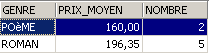
3.14. Créer le script SQL d'une table
Le langage SQL est un langage standard utilisable avec de nombreux SGBD. Afin de pouvoir passer d'un SGBD à un autre, il est intéressant d'exporter une base ou simplement certains éléments de celle-ci sous la forme d'un script SQL qui, rejoué dans un autre SGBD, sera capable de recréer les éléments exportés dans le script.
Nous allons ici exporter la table [BIBLIO]. Prenons l'option [Extract Metadata] :

On remarquera ci-dessus, qu'il faut être positionné sur la base dont on veut exporter des éléments. L'option démarre un assistant :
 |
où générer le script SQL : • dans un fichier (File) • dans le Presse-Papiers (Clipboard) • dans l'outil Script Executive | |
nom du fichier si l'option [File] est choisie | |
quoi exporter | |
boutons pour sélectionner (->) ou désélectionner (<-) les objets à exporter |
Si nous voulions exporter la totalité de la base, nous cocherions l'option [Extract All] ci-dessus. Nous voulons simplement exporter la table BIBLIO. Pour ce faire, avec [4], nous sélectionnons la table [BIBLIO] et avec [2] nous désignons un fichier :

Si nous nous arrêtons là, seule la structure de la table [BIBLIO] sera exportée. Pour exporter son contenu, il nous faut utiliser l'onglet [Data Tables] :
 |
Utillisons [1] pour sélectionner la table [BIBLIO] :
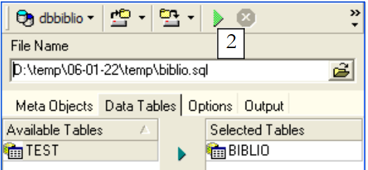 |
Utilisons [2] pour générer le script SQL :

Acceptons l'offre. Ceci nous permet de voir le script qui a été généré dans le fichier [biblio.sql] :
- les lignes 1 à 3 sont des commentaires
- les lignes 5 à 12 sont du SQL propriétaire de Firebird
- les autres lignes sont du SQL standard qui devraient pouvoir être rejouées dans un SGBD qui aurait les types de données déclarés dans la table BIBLIO.
Rejouons ce script à l'intérieur de Firebird pour créer une table BIBLIO2 qui sera un clône de la table BIBLIO. Utillisons pour cela [Script Executive] (Ctrl-F12) :

Chargeons le script [biblio.sql] que nous venons de générer :

Modifions-le pour ne garder que la partie création de la table et insertion de lignes. La table est renommée [BIBLIO2] :
CREATE TABLE BIBLIO2 (
ID INTEGER NOT NULL,
TITRE VARCHAR(30) NOT NULL,
AUTEUR VARCHAR(20) NOT NULL,
GENRE VARCHAR(30) NOT NULL,
ACHAT DATE NOT NULL,
PRIX NUMERIC(6,2) DEFAULT 10 NOT NULL,
DISPONIBLE CHAR(1) NOT NULL
);
INSERT INTO BIBLIO2 (ID, TITRE, AUTEUR, GENRE, ACHAT, PRIX, DISPONIBLE) VALUES (2, 'Les fleurs du mal', 'Baudelaire', 'POèME', '1978-01-01', 120, 'n');
...
COMMIT WORK;
Exécutons ce script :
 |  |
Nous pouvons vérifier dans l'explorateur de bases que la table [BIBLIO2] a bien été créée et qu'elle a bien la structure et le contenu attendus :
 | 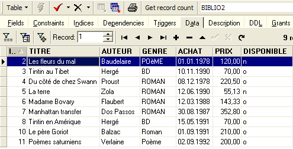 |